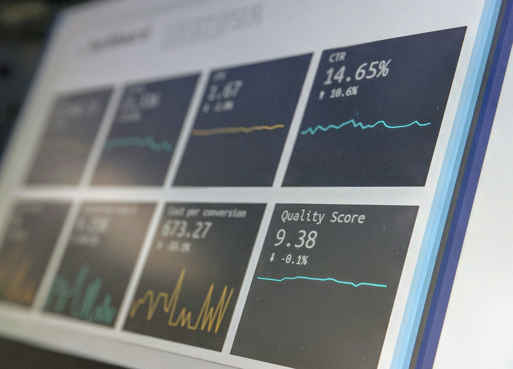
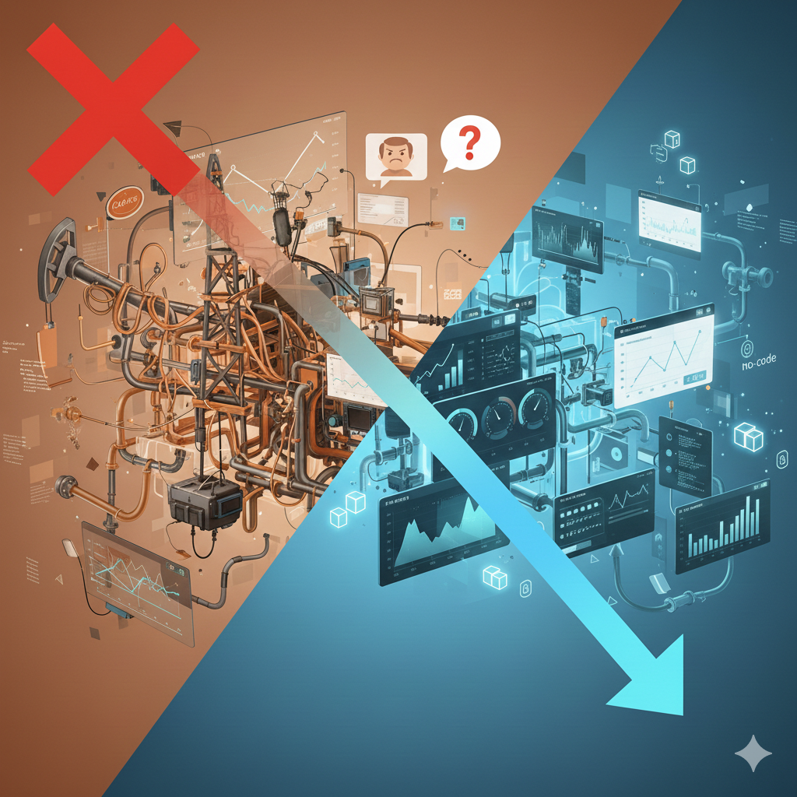

PRODUCT DESIGNER
Arquitetando soluções para sistemas complexos e missões críticas.
Especialista em visualização de dados e curadora de acessibilidade, dedico minha carreira a simplificar o complexo. Meu trabalho na INTELIE com setores de alta precisão me ensinou que clareza visual é uma vantagem competitiva. Atuo como mentora e facilitadora, defendendo que um produto só é verdadeiramente bem desenhado quando é acessível a todos, sem exceção.
[Foto Profissional de Carmem Ferreira]
Impacto gerado em grandes players do mercado
 Equinor
Fervo
Equinor
Fervo
Equinor
Fervo
Equinor
Fervo
Trabalhos Selecionados
Projetos estratégicos focados em escalabilidade e ROI de design.
VISUALIZAÇÃO DE DADOS | INTELIE
Data Navigation: Melhorias de navegação em dashboards dinâmicos
Navegação intuitiva de dados macro e micro em ambientes operacionais complexos.

VISUALIZAÇÃO DE DADOS | INTELIE
Escalando ROI através de Design No-Code
Autonomia para o utilizador final e redução drástica de custos técnicos de manutenção.
